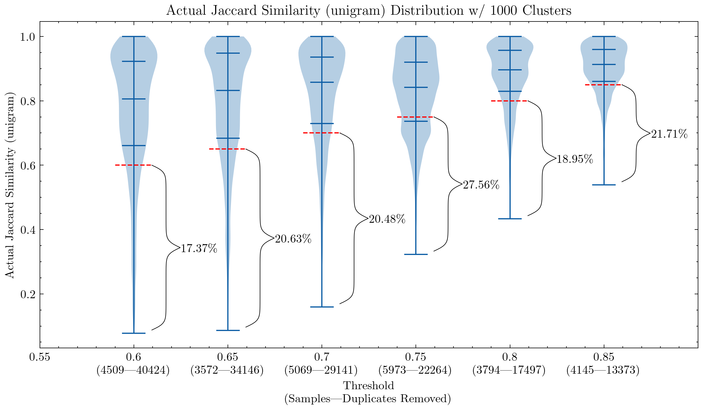
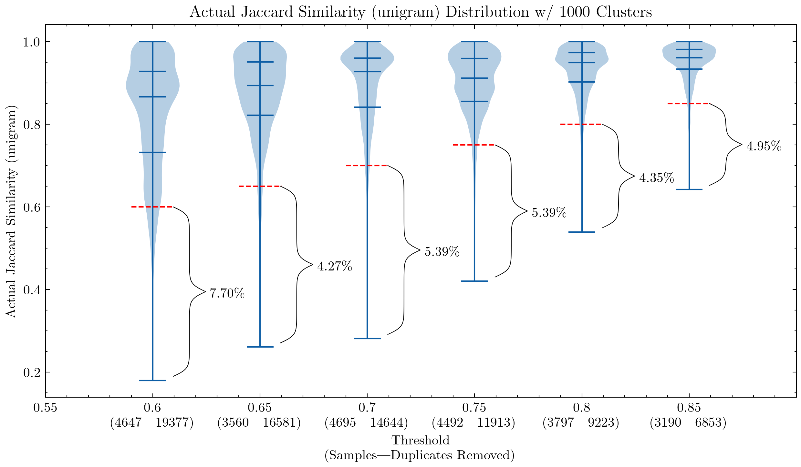
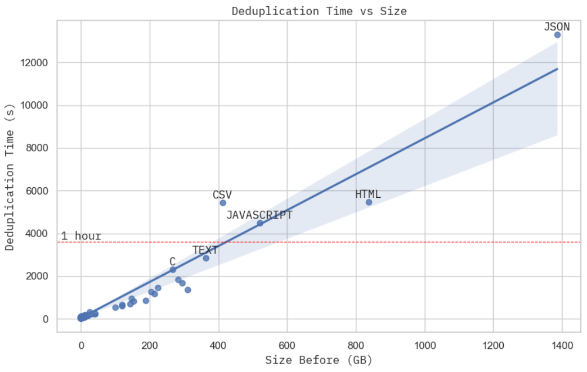
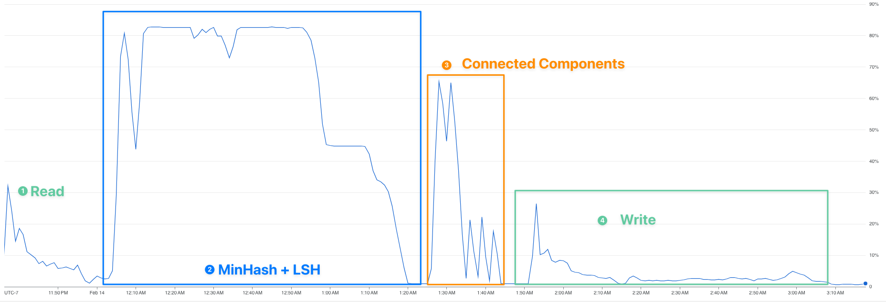

Large-scale Near-deduplication Behind BigCode
Intended Audience
People who are interested in document-level near-deduplication at a large scale, and have some understanding of hashing, graph and text processing.
Motivations
It is important to take care of our data before feeding it to the model, as the old saying goes, garbage in, garbage out. Even though it’s increasingly difficult to do so with headline-grabbing models (or should I say APIs) creating an illusion that data quality matters less.
One of the problems we face in both BigScience and BigCode for data quality is duplication, including possible benchmark contamination. It has been shown that models tend to output training data verbatim when there are many duplicates1 (though it is less clear in some other cases2), and it also makes the model vulnerable to privacy attacks3. Additionally, some typical advantages of deduplication also include:
- Efficient training: You can achieve the same performance with less training steps4 5.
- Prevent possible data leakage and benchmark contamination: Non-zero duplicates discredit your evaluations and potentially make so-called improvement a false claim.
- Accessibility. Most of us cannot afford to download or transfer thousands of gigabytes of text repeatedly, not to mention training a model with it. Deduplication, for a fix-sized dataset, makes it easier to study, transfer and collaborate with.
From BigScience to BigCode
Allow me to share a story first on how I jumped on this near-deduplication quest, how the results have progressed, and what lessons I have learned along the way.
It all started with a conversation on LinkedIn when BigScience had already started for a couple of months. Huu Nguyen approached me when he noticed my pet project on GitHub, asking me if I were interested in working on deduplication for BigScience. Of course, my answer was a yes, completely ignorant of just how much effort will be required alone due to the sheer mount of the data.
It was fun and challenging at the same time. It is challenging in a sense that I didn’t really have much research experience with that sheer scale of data, and everyone was still welcoming and trusting you with thousands of dollars of cloud compute budget. Yes, I had to wake up from my sleep to double-check that I had turned off those machines several times. As a result, I had to learn on the job through all the trials and errors, which in the end opened me to a new perspective that I don’t think I would ever have if it weren’t BigScience.
Moving forward, one year later, I am putting what I have learned back into BigCode, working on even bigger datasets. In addition to LLMs that are trained for English4, we have confirmed that deduplication improves code models too5, while using a much smaller dataset. And now, I am sharing what I have learned with you, my dear reader, and hopefully, you can also get a sense of what is happening behind the scene of BigCode through the lens of deduplication.
In case you are interested, here is an updated version of the deduplication comparison that I started in BigScience:
| Dataset | Input Size | Output Size or Deduction | Level | Method | Parameters | Language | Time |
|---|---|---|---|---|---|---|---|
| OpenWebText26 | After URL dedup: 193.89 GB (69M) | After MinHashLSH: 65.86 GB (17M) | URL + Document | URL(Exact) + Document(MinHash LSH) | English | ||
| Pile-CC6 | ~306 GB | 227.12 GiB (~55M) | Document | Document(MinHash LSH) | English | ”several days” | |
| BNE57 | 2TB | 570 GB | Document | Onion | 5-gram | Spanish | |
| MassiveText8 | 0.001 TB ~ 2.1 TB | Document | Document(Exact + MinHash LSH) | English | |||
| CC100-XL9 | 0.01 GiB ~ 3324.45 GiB | URL + Paragraph | URL(Exact) + Paragraph(Exact) | SHA-1 | Multilingual | ||
| C44 | 806.92 GB (364M) | 3.04% ~ 7.18% ↓ (train) | Substring or Document | Substring(Suffix Array) or Document(MinHash) | Suffix Array: 50-token, MinHash: | English | |
| Real News4 | ~120 GiB | 13.63% ~ 19.4% ↓ (train) | Same as C4 | Same as C4 | Same as C4 | English | |
| LM1B4 | ~4.40 GiB (30M) | 0.76% ~ 4.86% ↓ (train) | Same as C4 | Same as C4 | Same as C4 | English | |
| WIKI40B4 | ~2.9M | 0.39% ~ 2.76% ↓ (train) | Same as C4 | Same as C4 | Same as C4 | English | |
| The BigScience ROOTS Corpus10 | 0.07% ~ 2.7% ↓ (document) + 10.61%~32.30% ↓ (substring) | Document + Substring | Document (SimHash) + Substring (Suffix Array) | SimHash: 6-grams, hamming distance of 4, Suffix Array: 50-token | Multilingual | 12 hours ~ few days |
This is the one for code datasets I created for BigCode as well. Model names are used when the dataset name isn’t available.
| Model | Method | Parameters | Level |
|---|---|---|---|
| InCoder11 | Exact | Alphanumeric tokens/md5 + Bloom filter | Document |
| CodeGen12 | Exact | SHA256 | Document |
| AlphaCode13 | Exact | ignore whiespaces | Document |
| PolyCode14 | Exact | SHA256 | Document |
| PaLM Coder15 | Levenshtein distance | Document | |
| CodeParrot16 | MinHash + LSH | Document | |
| The Stack17 | MinHash + LSH | Document |
MinHash + LSH parameters :
- number of permutations/hashes
- Jaccard similarity threshold
- n-gram/shingle size
- number of bands
- number of rows
To get a sense of how those parameters might impact your results, here is a simple demo to illustrate the computation mathematically: MinHash Math Demo.
MinHash Walkthrough
In this section, we will cover each step of MinHash, the one used in BigCode, and potential scaling issues and solutions. We will demonstrate the workflow via one example of three documents in English:
| doc_id | content |
|---|---|
| 0 | Deduplication is so much fun! |
| 1 | Deduplication is so much fun and easy! |
| 2 | I wish spider dog18 is a thing. |
Shingles
Like in most applications involving text, we need to begin with tokenization. N-grams, a.k.a. shingles, are often used. In our example, we will be using word-level tri-grams, without any punctuations. We will circle back to how the size of ngrams impacts the performance in a later section.
| doc_id | shingles |
|---|---|
| 0 | {“Deduplication is so”, “is so much”, “so much fun”} |
| 1 | {‘so much fun’, ‘fun and easy’, ‘Deduplication is so’, ‘is so much’} |
| 2 | {‘dog is a’, ‘is a thing’, ‘wish spider dog’, ‘spider dog is’, ‘I wish spider’} |
This operation has a time complexity of where is the number of documents and is the length of the document. This step can be easily scaled by parallelization by multiprocessing or distributed computation.
Fingerprint Computation
In MinHash, each shingle will typically either be 1) hashed multiple times, or 2) permuted multiple times using one hash. Here, we choose to permute each hash 5 times.
| shingle | permuted hashes |
|---|---|
| Deduplication is so | [403996643, 2764117407, 3550129378, 3548765886, 2353686061] |
| is so much | [3594692244, 3595617149, 1564558780, 2888962350, 432993166] |
| so much fun | [1556191985, 840529008, 1008110251, 3095214118, 3194813501] |
Taking the minimum value of each column within each document, we arrive at the final MinHash for this document:
| doc_id | minhash |
|---|---|
| 0 | [403996643, 840529008, 1008110251, 2888962350, 432993166] |
| 1 | [403996643, 840529008, 1008110251, 1998729813, 432993166] |
| 2 | [166417565, 213933364, 1129612544, 1419614622, 1370935710] |
In implementation, you can easily vectorize these steps with numpy and expect to have a time complexity of where is your number of permutations. Code modified based on Datasketch.
def embed_func(
content: str,
idx: int,
*,
num_perm: int,
ngram_size: int,
hashranges: List[Tuple[int, int]],
permutations: np.ndarray,
) -> Dict[str, Any]:
a, b = permutations
masks: np.ndarray = np.full(shape=num_perm, dtype=np.uint64, fill_value=MAX_HASH)
tokens: Set[str] = {" ".join(t) for t in ngrams(NON_ALPHA.split(content), ngram_size)}
hashvalues: np.ndarray = np.array([sha1_hash(token.encode("utf-8")) for token in tokens], dtype=np.uint64)
permuted_hashvalues = np.bitwise_and(
((hashvalues * np.tile(a, (len(hashvalues), 1)).T).T + b) % MERSENNE_PRIME, MAX_HASH
)
hashvalues = np.vstack([permuted_hashvalues, masks]).min(axis=0)
Hs = [bytes(hashvalues[start:end].byteswap().data) for start, end in hashranges]
return {"__signatures__": Hs, "__id__": idx}If you are familiar with Datasketch, you might ask, why do we bother to strip all the nice high-level functions the library provides? It is not because we want to avoid adding dependencies, but because we intend to squeeze as much CPU computation as possible during parallelization. Fusing few steps into one function call enables us to utilize our compute resources better.
Since one document’s calculation is not dependent on anything else. A good parallelizatin choice would be using the map function from the datasets library:
embedded = ds.map(
function=embed_func,
fn_kwargs={
"num_perm": args.num_perm,
"hashranges": HASH_RANGES,
"ngram_size": args.ngram,
"permutations": PERMUTATIONS,
},
input_columns=[args.column],
remove_columns=ds.column_names,
num_proc=os.cpu_count(),
with_indices=True,
desc="Fingerprinting...",
)After the fingerprint calculation, one particular document is mapped to one array of integer values. To figure out what documents are similar to each other, we need to group them based on such fingerprints. Entering the stage, Locality Sensitive Hashing (LSH).
LSH breaks the fingerprint array into bands, each band containing the same number of rows. If two documents share the same hashes in a band, they will be clustered into the same bucket and will be considered as candidates. Let’s use bands and rows to group those documents. (Notice that the last value of the MinHash is ignored)
| band offset | band value | doc_ids |
|---|---|---|
| (0, 2) | [403996643, 840529008] | 0, 1 |
| (2, 4) | [1008110251, 2888962350] | 0, 1 |
| (0, 2) | [166417565, 213933364] | 2 |
| (2, 4) | [1129612544, 1419614622] | 2 |
For each row in the doc_ids column, we can generate candidate pairs by paring every two of them. From the above table, we can infer two pairs, even though they are the same:
| x | y |
|---|---|
| 0 | 1 |
| 0 | 1 |
Beyond Duplicate Pairs
This is where many deduplication descriptions in papers or tutorials stop. We are still left with the question of what to do with them. Generally, we can proceed with two options:
- Double-check their Jaccard similarities by calculating their shingle overlap, which now becomes much more doable than computing all-pair similarities. This is also what we did at BigCode at the beginning, which worked reasonably well.
- Treat them as true positives. You probably already noticed the issue here: the Jaccard similarity isn’t transitive, meaning is similar to and is similar to , but and do not necessary share the similarity. However, our experiments from The Stack show that treating all of them as duplicates improves the downstream model’s performance the best. And now we gradually moved towards this method instead, and it saves time as well. But to apply this to your dataset, I still suggest going over your dataset and looking at your duplicates, and then making a data-driven decision.
From such pairs, whether they are validated or not, we can now construct a graph with those pairs as edges, and duplicates will be clustered into communities or connected components. In terms of implementation, unfortunately, this is where datasets couldn’t help much because now we need something like a groupby where we can cluster documents based on their band offset and band values. Here are some options we have tried:
Option 1: Iterate the datasets the old-fashioned way and collect edges. Then use a graph library to do community detection or connected component detection.
This did not scale well in my test, and the reasons are multifold. First, iterating the whole dataset is slow and memory consuming at a large scale. Second, popular graph libraries like graphtool or networkx have a lot of overhead for graph creation.
Option 2: Popular python frameworks such as dask to allow more efficient groupby operations, but then you still have problems of slow iteration and slow graph creation.
So, we ended up with a simple iteration + union find algorithm combo that works relatively well for medium datasets.
for table in tqdm(HASH_TABLES, dynamic_ncols=True, desc="Clustering..."):
for cluster in table.values():
if len(cluster) <= 1:
continue
idx = min(cluster)
for x in cluster:
uf.union(x, idx)For large datasets, our current best option is Spark.
We already know that steps up to the LSH part can be parallelized, which is also achievable in Spark. In addition to that, Spark supports distributed groupBy out of the box, and it is also straightforward to implement algorithms like 3 for connected component detection. If you are wondering why we didn’t use Spark’s implementation of MinHash, the answer is that all our experiments so far stemmed from Datasketch, which uses an entirely different implementation than Spark, and we want to ensure that we carry on the lessons and insights learned from that without going into another rabbit hole of ablation experiments.
edges = (
records.flatMap(
lambda x: generate_hash_values(
content=x[1],
idx=x[0],
num_perm=args.num_perm,
ngram_size=args.ngram_size,
hashranges=HASH_RANGES,
permutations=PERMUTATIONS,
)
)
.groupBy(lambda x: (x[0], x[1]))
.flatMap(lambda x: generate_edges([i[2] for i in x[1]]))
.distinct()
.cache()
)A simple connected component algorithm based on 3 implemented in Spark.
a = edges
while True:
b = a.flatMap(large_star_map).groupByKey().flatMap(large_star_reduce).distinct().cache()
a = b.map(small_star_map).groupByKey().flatMap(small_star_reduce).distinct().cache()
changes = a.subtract(b).union(b.subtract(a)).collect()
if len(changes) == 0:
break
results = a.collect()Additionally, thanks to cloud providers like GCP, we can set up Spark clusters like a breeze with services like DataProc. In the end, we can comfortably run the program to deduplicate 1.4 TB of data in just under 4 hours with a budget of $15 an hour.
Quality Matters
Scaling a ladder doesn’t get us to the moon. That’s why we need to make sure this is the right direction, and we are using it the right way.
Early on, our parameters were largely inherited from the CodeParrot experiments, and our ablation experiment indicated that those settings did improve the model’s downstream performance17. We then set to further explore this path and can confirm that5:
- Near-deduplication improves the model’s downstream performance with a much smaller dataset (6 TB VS. 3 TB)
- We haven’t figured out the limit yet, but a more aggressive deduplication (6 TB VS. 2.4 TB) can improve the performance even more:
- Lower the similarity threshold
- Increase the shingle size (unigram → 5-gram)
- Ditch false positive checking because we can afford to lose a small percentage of false positives
 
These graphs can help us understand why it was necessary to double-check the false positives for CodeParrot and early version of the Stack: using unigram creates many false positives; They also demonstrate that by increasing the shingle size to 5-gram, the percentage of false positives decreases significantly. A smaller threshold is desired if we want to keep the deduplication aggressiveness.
Additional experiments also showed that lowering the threshold removes more documents that have high similarities pairs, meaning an increased recall in the segment we actually would like to remove the most.
Scaling


This isn’t the most rigorous scaling proof you can find, but the deduplication time, given a fixed computation budget, looks practically linear to the physical size of the dataset. When you take a closer look at the cluster resource usage when processing JSON dataset, the largest subset in the Stack, you can see the MinHash + LSH (stage 2) dominated the total real computation time (stage 2 + 3), which from our previous analysis is — linear to the dataset physical volume.
Proceed with Caution
Deduplication doesn’t exempt you from thorough data exploration and analysis. These discoveries hold true for The Stack, but it does not mean it is appliable to other datasets or languages. We still encourage you to perform similar analysis on your datasets before training. For example, it might not be very helpful to do deduplication if you have tight time and compute budget: @geiping_2022 mentions that substring deduplication didn’t improve their model’s downstream performance. Existing datasets might also require thorough examination before use, for example, @gao_2020 states that they only made sure the Pile itself, along with its splits, are deduplicated, and they won’t proactively deduplicating for any downstream benchmarks and leave that decision to readers.
In terms of data leakage and benchmark contamination, there is still much to explore. We had to retrain our code models because HumanEval was published in one of the GitHub repos in Python. Early near-deduplication results also suggest that MBPP19, one of the most popular benchmarks for coding, shares a lot of similarity with many Leetcode problems (e.g., task 601 in MBPP is basically Leetcode 646, task 604 ≃ Leetcode 151.). And we all know GitHub is no short of those coding challenges and solutions. It will be even more difficult if someone with bad intentions upload all the benchmarks in the form of python scripts, or other less obvious ways, and pollute all your training data.
Future Directions
- Substring deduplication. Even though it showed some benefits for English4, it is not clear yet if this should be applied to code data as well;
- Repetition: paragraphs that are repeated multiple times in one document. @rae_2021 shared some interesting heuristics on how to detect and remove them.
- Using model embeddings for semantic deduplication. It is another whole research question with scaling, cost, ablation experiments, and trade-off with near-deduplication. There are some intriguing takes on this20, but we still need more situated evidence to draw a conclusion (e.g, @abbas_2023’s only text deduplication reference is @lee_2022a, whose main claim is deduplicating helps instead of trying to be SOTA).
- Optimization. There is always room for optimization: better quality evaluation, scaling, downstream performance impact analysis etc.
- Then there is another direction to look at things: To what extent near-deduplication starts to hurt performance? To what extent similarity is needed for diversity instead of being considered as redundancy?
Credits
The banner image contains emojis (hugging face, Santa, document, wizard, and wand) from Noto Emoji (Apache 2.0). This blog post is proudly written without any generative APIs.
Huge thanks to Huu Nguyen and Hugo Laurençon for the collaboration in BigScience and everyone at BigCode for the help along the way! If you ever find any error, feel free to contact me: mouchenghao at gmail dot com.
Supporting Resources
- Datasketch (MIT)
- simhash-py and simhash-cpp (MIT)
- Deduplicating Training Data Makes Language Models Better (Apache 2.0)
- Gaoya (MIT)
- BigScience (Apache 2.0)
- BigCode (Apache 2.0)
References
Footnotes
-
Nikhil Kandpal, Eric Wallace, Colin Raffel, Deduplicating Training Data Mitigates Privacy Risks in Language Models, 2022 ↩
-
Gowthami Somepalli, et al., Diffusion Art or Digital Forgery? Investigating Data Replication in Diffusion Models, 2022 ↩
-
Raimondas Kiveris, Silvio Lattanzi, et al., Connected Components in MapReduce and Beyond, 2014 ↩ ↩2 ↩3
-
Katherine Lee, Daphne Ippolito, et al., Deduplicating Training Data Makes Language Models Better, 2022 ↩ ↩2 ↩3 ↩4 ↩5 ↩6 ↩7
-
Loubna Ben Allal, Raymond Li, et al., SantaCoder: Don’t reach for the stars!, 2023 ↩ ↩2 ↩3
-
Leo Gao, Stella Biderman, et al., The Pile: An 800GB Dataset of Diverse Text for Language Modeling, 2020 ↩ ↩2
-
Asier Gutiérrez-Fandiño, Jordi Armengol-Estapé, et al., MarIA: Spanish Language Models, 2022 ↩
-
Jack W. Rae, Sebastian Borgeaud, et al., Scaling Language Models: Methods, Analysis & Insights from Training Gopher, 2021 ↩
-
Xi Victoria Lin, Todor Mihaylov, et al., Few-shot Learning with Multilingual Language Models, 2021 ↩
-
Hugo Laurençon, Lucile Saulnier, et al., The BigScience ROOTS Corpus: A 1.6TB Composite Multilingual Dataset, 2022 ↩
-
Daniel Fried, Armen Aghajanyan, et al., InCoder: A Generative Model for Code Infilling and Synthesis, 2022 ↩
-
Erik Nijkamp, Bo Pang, et al., CodeGen: An Open Large Language Model for Code with Multi-Turn Program Synthesis, 2023 ↩
-
Yujia Li, David Choi, et al., Competition-Level Code Generation with AlphaCode, 2022 ↩
-
Frank F. Xu, Uri Alon, et al., A Systematic Evaluation of Large Language Models of Code, 2022 ↩
-
Aakanksha Chowdhery, Sharan Narang, et al., PaLM: Scaling Language Modeling with Pathways, 2022 ↩
-
Lewis Tunstall, Leandro von Werra, Thomas Wolf, Natural Language Processing with Transformers, Revised Edition, 2022 ↩
-
Denis Kocetkov, Raymond Li, et al., The Stack: 3 TB of permissively licensed source code, 2022 ↩ ↩2
-
Jacob Austin, Augustus Odena, et al., Program Synthesis with Large Language Models, 2021 ↩
-
Amro Abbas, Kushal Tirumala, et al., SemDeDup: Data-efficient learning at web-scale through semantic deduplication, 2023 ↩